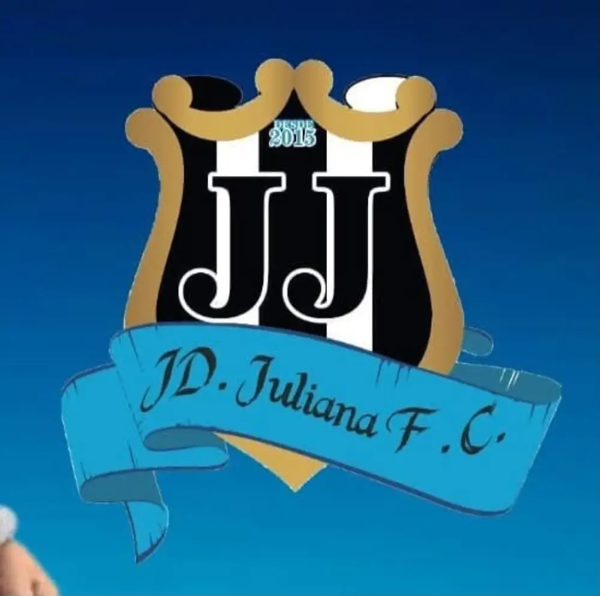

foto em breve
Samba na Amadeu Borelli
A nossa rua vira palco do samba, reunindo vizinhos, música e a roda que é a cara do bairro. Tradição que atravessa gerações.

Jardim Juliana FC"Mais que um time, uma família."
Desde 1999 · Zona Leste · Ribeirão Preto - SP Conheça o clubeNossa missão vai além das quatro linhas: usar o futebol para unir gerações, dar orgulho ao bairro e fortalecer a comunidade. Cada jogo é uma celebração da nossa gente e da nossa história.
A nossa história começou em 1999, como PC J FC, disputando torneios de bairro e campeonatos de futsal. Mas a essência veio de antes: nas ruas, nos encontros entre amigos, nas tardes de futebol improvisado, nas conversas nas calçadas e no sentimento de união que sempre fez parte da comunidade. Ano após ano, o time foi crescendo — até que, em 2012, com muito planejamento, demos o passo para o futebol amador da cidade e adotamos o nome do nosso bairro: Jardim Juliana FC.
Localizado na zona leste de Ribeirão Preto, o bairro Jardim Juliana foi fundado na década de 1990, durante o crescimento e a expansão da região da COHAB. Desde os seus primeiros anos, a Rua Amadeu Borelli se tornou um dos principais pontos de referência do bairro, sendo palco de histórias, amizades e momentos que marcaram gerações.
O Jardim Juliana nasceu do esforço e da determinação de famílias trabalhadoras que, com muita luta, construíram não apenas suas casas, mas também uma comunidade forte, acolhedora e unida. Cada morador ajudou a transformar o bairro em um lugar de pertencimento, respeito e solidariedade.
Ao longo dos anos, o bairro desenvolveu uma identidade própria. Entre rodas de samba, música, festas comunitárias, encontros entre vizinhos e o amor pelo esporte, especialmente pelo futebol, formou-se uma cultura rica, vibrante e cheia de histórias para contar.
Aqui, o futebol sempre foi muito mais do que um jogo. Foi um ponto de encontro. Um motivo para reunir amigos, fortalecer laços e criar memórias inesquecíveis.
Próximo aos grandes eucaliptos que emolduram a região e trazem um toque especial de natureza e tranquilidade, o Jardim Juliana cresceu preservando aquilo que tem de mais valioso: as pessoas.
São homens e mulheres que acordam cedo para trabalhar, jovens que sonham com um futuro melhor, crianças que encontram no esporte uma oportunidade de aprendizado e famílias que carregam consigo o orgulho de viver no bairro.
Mesmo com o crescimento e a constante expansão da região, o Jardim Juliana mantém viva sua essência comunitária. Novos moradores chegam todos os dias e passam a fazer parte de uma história construída com respeito, amizade e união.
Foi dessa essência que o clube cresceu. De torneios de bairro e futsal, em 1999, à entrada no futebol amador da cidade, em 2012, quando adotamos o nome Jardim Juliana FC para representar tudo aquilo que o bairro sempre foi: garra, humildade, companheirismo e paixão.
Cada treino, cada partida e cada conquista carregam o nome e a história de uma comunidade inteira. O escudo do Jardim Juliana FC simboliza o orgulho de quem nasceu aqui, cresceu aqui ou escolheu este lugar para chamar de lar.
Dentro de campo, jogamos para vencer. Fora dele, jogamos para fortalecer amizades, incentivar o esporte, inspirar crianças e manter viva a tradição que une gerações.
O Jardim Juliana FC acredita que o futebol é uma ferramenta de transformação social. Ele ensina valores que levamos para a vida: respeito, disciplina, compromisso, superação e trabalho em equipe. Mais do que formar atletas, queremos formar cidadãos.
Aqui, cada criança que veste nossa camisa carrega um sonho. Cada morador que acompanha nossos jogos faz parte da nossa trajetória. Cada apoiador, parceiro e torcedor ajuda a escrever novos capítulos da nossa história.
E é impossível contar a história do Jardim Juliana FC sem mencionar a nossa maior paixão nas arquibancadas: a torcida organizada Febre Azul — a voz, a energia e o coração pulsante do nosso clube. É ela que transforma cada jogo em uma celebração, que canta, apoia e incentiva do primeiro ao último minuto. Mais do que torcedores, somos irmãos.
No Jardim Juliana FC, acreditamos que ninguém caminha sozinho. Nossa força vem da união, da amizade e do sentimento de pertencimento que atravessa gerações.
Somos filhos do Jardim Juliana.
Somos a força da zona leste.
Somos a tradição que nasceu na comunidade.
Seguimos em frente, honrando nossas raízes e construindo um futuro cada vez mais forte para as próximas gerações. Aqui, você não encontra apenas um time de futebol. Você encontra uma família. Você encontra o Jardim Juliana FC.
Ser Jardim Juliana é cuidar da nossa gente o ano inteiro. Na Rua Amadeu Borelli, a comunidade se encontra, celebra e cresce junta — com música, alegria e ações que transformam vidas.
A nossa rua vira palco do samba, reunindo vizinhos, música e a roda que é a cara do bairro. Tradição que atravessa gerações.
Todos os anos promovemos festas para a criançada do bairro — brincadeiras, sorrisos e memórias que ficam pra vida toda.
Ações para toda a comunidade do Jardim Juliana: do esporte ao cuidado com as pessoas. Aqui, ninguém fica para trás.
O ano inteiro — não só nos dias de jogo.
Fundado na década de 1990, o Jardim Juliana é um bairro tradicional da zona leste de Ribeirão Preto, construído a partir do sonho da casa própria e da força de uma comunidade trabalhadora e acolhedora.
As primeiras famílias chegaram em novembro de 1993, quando as ruas ainda eram de terra e a infraestrutura estava em desenvolvimento. Com união e muito esforço coletivo, os próprios moradores ajudaram a construir não apenas suas casas, mas também a identidade do bairro.
Antes ocupado por áreas rurais e cercado pela natureza, o Jardim Juliana cresceu ao lado de importantes marcos da região, mantendo até hoje o espírito de vizinhança, solidariedade e pertencimento.
No coração do bairro está a E.M.E.F. “Profª Dercy Célia Seixas Ferrari” — uma escola amada, fundamental na vida de todos e referência para a região. Por suas salas passaram gerações e gerações de moradores que ali aprenderam, se formaram e se tornaram grandes pessoas, guardando para sempre o carinho por essa escola que ajudou a construir o caráter da comunidade. Mais do que ensinar, ela acolhe — não só o Jardim Juliana, mas também as famílias dos bairros vizinhos, como o Jardim das Palmeiras I e II, o Jardim Helena e o Parque dos Servidores. Aqui, ninguém é de fora: toda a região é parte da mesma família.
Hoje, o Jardim Juliana é reconhecido pela sua história de luta, pelas raízes culturais, pela valorização da família e pelo orgulho de quem nasceu, cresceu ou escolheu viver aqui — e de toda a vizinhança que caminha junto. E foi dessa terra que nasceu o nosso clube: começou em 1999 como PC J FC e, em 2012, passou a carregar o nome do bairro na camisa como Jardim Juliana FC.
O bairro nasce na expansão da região da COHAB, tendo a Rua Amadeu Borelli como sede do clube e a Rua Doutor Urandir Vieira de Souza Leite como principal rua da comunidade.
Nasce o clube como PC J FC, disputando torneios de bairro e campeonatos de futsal.
Com muito planejamento, entra no futebol amador da cidade e adota o nome Jardim Juliana FC, levando o bairro na camisa.
Toda grande comunidade é construída por pessoas que ensinam pelo exemplo. No Jardim Juliana, uma delas marcou para sempre a nossa história.
Falar do Jardim Juliana é também falar de Píter, o “Rocha Negra” — ídolo do Comercial e reconhecido por Pelé como um de seus marcadores mais difíceis. Por muitos anos, ele usou o campo do bairro para ensinar futebol e, acima de tudo, valores — respeito, humildade e perseverança — às crianças da comunidade.
“Antes de formar atletas, Píter ajudou a formar pessoas.”
Muitos fundadores e atletas do clube foram seus alunos. O Jardim Juliana FC nasce dessa herança. Obrigado, Rocha Negra.
"Nas arquibancadas, uma torcida. Na vida, uma família."
A Febre Azul é a voz e a energia do Jardim Juliana FC. Tambores, cantos e fumaça azul que transformam cada partida em festa e cada arquibancada em casa. É o coração que pulsa pelo clube.
Vista o orgulho da zona leste e leve a nossa história com você. Fale direto com a diretoria pelo WhatsApp e garanta a sua camisa — cada apoio ajuda o clube a seguir em campo.
Atendimento direto com a diretoria do clube.